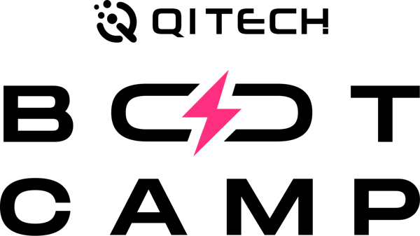

HACKATHON QI TECH 2026 · RISK SOLUTIONSRegras que um atendente consegue explicar, calibradas num simulador independente, com machine learning pronto em modo sombra.

Somos iniciantes em antifraude. Em vez de inventar limites da nossa cabeça, fomos atrás de quem já estudou e mediu.
Branca e cinzenta: detecção estatística de fraude, aprendizado com rótulo que chega atrasado e a taxonomia dos golpes de Pix no Brasil.
O limite noturno de R$ 1.000 e os fatores de suspeita do Regulamento do Pix: idade da conta que recebe, recorrência entre quem paga e quem recebe.
O PixSim: tráfego e golpes de Pix gerados por outros autores e calibrados com dados públicos do BCB.
Daí saiu uma arquitetura em que cada regra ou modelo entra e sai sem mexer no resto, e cada parâmetro pode ser recalibrado para o perfil de clientes de cada banco.
A pergunta do projeto: as técnicas clássicas ainda funcionam no Pix? Medimos, em vez de supor.
Barrar exige um sinal extremo ou uma combinação que descreve um golpe conhecido: conta tomada, conta laranja.
A resposta lista os motivos em português, do mais grave ao mais leve, com os números usados e a versão das regras.
No simulador independente, barra golpes e paga o incômodo que causa nos clientes bons.
Limite noturno, idade da conta que recebe: fica mesmo quando o simulador preferiria outra coisa.
Viagem impossível, fazenda de aparelhos, funil de vítimas: lá não dispara e não custa nada.
regras saíram do motor depois de medidas: fracionamento em Pix pequenos, destino que já teve Pix recusado e soma diária. Desligamos uma regra de cada vez e vimos que elas incomodavam mais clientes bons do que golpes evitavam, nos dois cenários do simulador.
COUNTERPARTY_FIRST_TIME_HIGH
Golpe manda o dinheiro para quem a vítima nunca pagou. O aluguel vai sempre para o mesmo lugar. É a regra que mais protege.
PROFILE_NEW_DEVICE
Trocar de aparelho é o primeiro passo de quem tomou a conta de alguém. O piso poupa o cafezinho do celular novo.
VELOCITY_POISSON_GAMMA
"Rápido demais" é diferente para cada um: comparamos a pressa de agora com o histórico do próprio cliente.
As 15 regras, com parâmetro e fonte de cada uma, estão no README e no catálogo de regras.
| Nível | Pergunta | No motor | Situação |
|---|---|---|---|
| 1 · Individual | Está no padrão dele? | Valor fora do perfil, rajada, aparelho novo | usado |
| 2 · Grupo de pares | Está no padrão de quem é parecido? | Comparação com clientes do mesmo tipo e idade de conta | medido e descartado |
| 3 · Ponto de ruptura | O comportamento mudou de repente? | Por aproximação: rajada, aparelho novo, modelo de sequência em sombra | parcial |
| 4 · Rótulos externos | Alguém já marcou esse destino? | Fraude confirmada pelo MED marca a conta que recebe | só no backtest |
Os quatro níveis são a organização da nossa pesquisa a partir de Bolton & Hand (2002).
Gera os golpes que nós desenhamos, e as regras foram escritas para pegá-los: barram 98,5%. É circular.
Ficou só como teste automático do CI, para nenhuma mudança quebrar o que funcionava.
Golpes que não desenhamos: engenharia social, conta tomada, Pix errado, QR adulterado.
Critério: custo em reais, somando a fraude que passa e o incômodo causado aos clientes bons.
dos Pix legítimos pedem confirmação; praticamente nenhum é barrado
dos golpes de conta tomada têm algum Pix barrado
de prejuízo esperado em relação a não ter motor, já contando o incômodo
Simulador de terceiros, não Pix real: os números indicam direção e ordem de grandeza.
O golpista convence a vítima, e ela paga do próprio celular, dentro do próprio padrão. Quase nada parece fraude, exceto o destinatário novo.
O motor só consegue pedir confirmação, e uma vítima pressionada pode confirmar.
Se mais de ~40% das vítimas confirmarem, o motor passa a custar mais do que não ter motor.
Próximo passo: 2FA que alerta sobre o golpe, segurar por algumas horas o primeiro Pix alto e olhar a conta que recebe.
Paridade: o mesmo roteiro de Pix nos dois lados dá 0 divergências em decisão, motivos e nas 33 características calculadas.
middlewaresschemasresourcescontrollersrepositoriesMesmo id e mesmo Pix: a mesma resposta (200). Id repetido com outro conteúdo: 409.
Só INSERT. Todo Pix fica gravado, inclusive os barrados. Dinheiro em centavos.
Toda linha com o id da requisição: dá para seguir um Pix de ponta a ponta.
Todos pela própria API: cada regra tem um caso que passa e um que dispara.
Em todo Pix, o modelo calcula um score e registra o que decidiria, mas quem decide são as regras. O banco compara os dois no mesmo tráfego, sem arriscar o cliente.
Regressão logística, LightGBM e Isolation Forest no caminho rápido; GraphSAGE e HMM no de fundo.
Custo com o modelo, conforme a qualidade dele (AUC):
Ligar um modelo é uma linha de código. O que falta é rótulo real de fraude.
Pix barrado nunca gera reclamação. Com o modelo decidindo, 77% das fraudes nunca viram rótulo, e o retreino aprende a esquecer o que já é barrado.
Só no backtest, com os atrasos reais de reporte do simulador. A API não recebe desfechos: o contrato do desafio tem só POST e GET.
Cada decisão com o contexto, as alternativas descartadas e o preço de cada uma.
Do contexto aos componentes, mais o backtest e o ciclo de retroalimentação.
AGENTS.md e llms.txt dão o contexto direto: menos tokens para uma IA entender o projeto.
Toda mudança registrada com o porquê, de pessoa ou de agente.
| 01 | Rota de desfechos: o MED e o DICT voltando para o motor como rótulo |
| 02 | Inferência de rejeitados: corrigir o treino pelas fraudes que o motor barrou |
| 03 | Janelas em streaming (Kafka + Flink + Redis) para escalar o histórico |
| 04 | Scores externos no caminho de fundo: bureaus e listas de contas suspeitas |
| 05 | Dados de sessão (digitação, chamada em andamento) para o modelo de sequência |
[1] QI Tech. Desafio Antifraude Pix e slides do Hackathon QI Tech 2026.
[2] Pesquisa QITech (documento interno do time).
[3] Bolton, R. J.; Hand, D. J. (2002). Statistical fraud detection: a review. Statistical Science 17(3).
[4] Pizzolato et al. (2025). A taxonomy of Pix fraud in Brazil. arXiv:2511.20902.
[5] Zeimarani, B. et al. (2026). PixSim: a calibrated open-source simulator of instant-payment fraud. github.com/BashirZeimarani/pixsim_public.
[6] Dal Pozzolo, A. et al. (2015). Calibrating probability with undersampling for unbalanced classification. IEEE SSCI.
[7] Dal Pozzolo, A. et al. (2018). Credit card fraud detection: a realistic modeling and a novel learning strategy. IEEE TNNLS 29(8).
[8] Dal Pozzolo, A. et al. (2014). Learned lessons in credit card fraud detection from a practitioner perspective. ESWA 41(10).
[9] Lucas, Y. et al. (2019). Multiple perspectives HMM-based feature engineering for credit card fraud detection. ACM SAC.
[10] Carcillo, F. et al. (2018). SCARFF: a scalable framework for streaming credit card fraud detection with Spark. Information Fusion 41.
[11] Banco Central do Brasil. Resolução BCB nº 142/2021; Instrução Normativa BCB nº 512/2024.
[12] Banco Central do Brasil. Regulamento do Pix, arts. 37 e 39-B.
[13] Iglewicz, B.; Hoaglin, D. C. (1993). How to Detect and Handle Outliers. ASQC.
[14] Platt, J. C. (1999). Probabilistic outputs for support vector machines. Advances in Large Margin Classifiers.
[15] Ke, G. et al. (2017). LightGBM: a highly efficient gradient boosting decision tree. NeurIPS 30.
[16] Liu, F. T.; Ting, K. M.; Zhou, Z.-H. (2008). Isolation forest. IEEE ICDM.
[17] Hamilton, W. L.; Ying, R.; Leskovec, J. (2017). Inductive representation learning on large graphs. NeurIPS 30.
[18] Rabiner, L. R. (1989). A tutorial on hidden Markov models. Proceedings of the IEEE 77(2).
[19] Gelman, A. et al. (2013). Bayesian Data Analysis, 3ª ed. CRC Press.